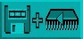
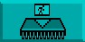
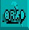
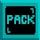

The Object Editor
The Object Editor is a utility that enables the AMOS Professional programmer to create and edit
screen Objects such as Bobs, Hardware Sprites, Computed Sprites, Icons and Blocks. The Object
Editor allows you to change the appearance of Objects in an almost limitless way and it even
includes your own animation suite!
Loading the Object Editor
The best way to understand the Object Editor is to go ahead and use it. It can be selected from
the User Menu by triggering the [Object Editor] option.
Alternatively, make sure that the Accessories disc is loaded and select the following program
from the File Selector:
Object_Editor.AMOS
The Object Editor is crammed full of data. In fact it contains so many features that they cannot
all be accommodated in the amount of memory reserved for the editing buffer, if the Object
Editor is loaded using the File Selector. A message will appear in the Information Line asking if
you want to change the buffer size, and you should respond by pressing [Y] before you can run
the Object Editor.
When the Object Editor has loaded, a Main Menu Screen appears. Before you go any further,
load some Object images into the Object Editor to provide something practical to work on.
Please follow these steps:
- Look at the line of boxed images at the top of the screen. In the top left-hand corner is a panel
that says "Object Editor". Next to that is a panel displaying an icon of a disc drive. Click on
this disc drive icon with the left mouse button, and leave the mouse cursor exactly where it is.
- A new range of images should now be displayed at the top of the screen. Using the left mouse
button, please click on the box that shows a floppy disc with an arrow pointing to the right
towards a "storage bank" building.
- A file selector should now appear, headed "Choose an Object bank". From the Tutorial disc,
select the folder marked "*Objects", then load the "Bobs.Abk" file.
- The Main Menu Screen will now fill with various Object images. When this happens, move
your mouse pointer to anywhere in the top line of images, and click on the right mouse
button. You are now ready to experience the wonders of the AMOS Professional Object
Editor.
The Main Menu Screen
Here is an illustration of the Main Menu Screen, with a typical Object image ready to be worked
on. Please identify each of the areas of this screen, as they are described.
MAJOR OPTIONS
At the very top of the Main Menu Screen there is a horizontal line of large icons. These represent
all the major options for importing, handling and exporting Object images. At the far left is the
Object Editor identification logo, and then from left to right the icons are used to call up menus
for the following options: disc operations, image bank operations, grabbing images, hot spots,
palette colours, screen resolutions and animations. At the right-hand side of these icons, is the
[Quit] icon.
INFORMATION LINE
Immediately below the line of Major Options is the Information Line. This line provides a
running commentary on what is happening. It tells you how much memory is available,
reminds you of what operation is taking place and provides prompts to help create graphic
wonders.
DRAWING TOOLS
The third horizontal section from the top of the screen shows a line of smaller icons.
Each of these is used to provide one of the special drawing tools for creating and changing the
appearance of Object images, and they are explained in detail, later in this Chapter.
MOUSE COLOURS
At the left-hand edge of the screen is a stack of small coloured blocks.
At the top of this stack are three double-height coloured blocks. The first two colour blocks show
the colours currently under the control of the left and right mouse buttons, when used for
drawing. The third double-height colour block shows the colour currently used when both
mouse buttons are pressed at once, when drawing.
COLOUR PALETTE
The vertical display of all the colours in the current palette can be seen below the mouse colours.
The total umber of the palette colours depends on what sort of "resolution" is being used, and if
64 colours are available, then colours numbered from 32 to 63 will appear in order, side by side
of colours zero to 31. To select a colour, place the mouse pointer over your choice, and click
either the left or right mouse button to allocate that colour to that button. A third colour can be
selected by pressing both buttons, and it is used when both buttons are depressed. Obviously, if
you have a three-button mouse, choosing and using the third colour is easier. Select a pair of
contrasting colours now, such as white and bright red.
CURRENT DISPLAY
Now look at the vertical stack of zones at the right-hand side of the screen. At the top of this
stack, immediately below the [UNDO] icon, there is a square box which displays the "fill
pattern" currently available for use. Place the mouse pointer inside it now, and run through all
the available fill patterns, using the left button to move forwards and the right button to go
backwards through the list. This box is also used to display a read-out of the coordinates of the
mouse pointer when images are edited.
BANK DISPLAY
Beneath the Current Display box, the images in the current bank are displayed one on top of the
other, and the number of each image appears above it. Each image is shrunk in size so that all of
it may be viewed in its own rectangular display box. To select an image for attention, click the
mouse pointer on it, and you will see that its number becomes highlighted. Any image that is
currently being edited is marked with an asterisk star (*) in front of its number.
BANK SLIDER
To the right of the stack where the bank of images will appear, there is a vertical slider bar.
Because there can be hundreds of images in any one bank, and there can only be enough space
to view a few of them at a time, this slider is pulled up and down with the mouse pointer to
display other images in the bank. Use it now to view all the images currently loaded.
SCREEN SIZER
To the right-of-centre of the screen is a narrow vertical bar, which can be dragged to the left or
right using the mouse pointer, if you need to change the proportions of the Edit Screen. The
right-hand zone is the EDIT WINDOW, where images that are being edited are viewed in actual
size. The left-hand zone is the ZOOM WINDOW area, where you can view your work in close-
up, as it progresses.
ZOOM WINDOW
The Zoom Window displays a blow-up version of the image, allowing greater accuracy and ease
of use while editing. The zoom is normally set to double the size of the original graphics,
and there is an option to make this four times the size, which is explained later.
EDIT WINDOW
Like the Zoom Window, this is a work area. The mouse pointer changes to a cross when inside
either the Zoom or the Edit Window, and drawing operations will have the same result in both
windows no matter which one is being used.
VERTICAL ZOOM
On the right-hand edge of the Edit Window is a vertical slider bar. This indicates other available
areas of the image when the Zoom Window is unable to show the whole of what is inside the
Edit Window. By moving this slider up and down, the hidden areas may be displayed in the
Zoom Window.
HORIZONTAL ZOOM
This has the same function and operation as the Vertical Zoom, and moves the display
horizontally. The Horizontal Zoom slider is to be found at the bottom of the Edit Window.
OBJECT SIZER
The last feature of the Edit Screen takes up the smallest space on the screen, and it can be found
in the bottom right-hand corner of the Edit Window, where the vertical and horizontal sliders
meet. If you look at the Information Line, the size of the current image will be displayed there.
To change the size of an image, lock the mouse pointer on the small square Sizer gadget, and
drag it to a new position. The maximum sizes of Sprites, Bobs, Blocks and Icons are all detailed
in their appropriate Chapters, but boundaries should generally be kept as tight as possible, to
save memory.
Major Options
Here is a guided tour of all the Major Options featured in the Object Editor, as they appear from
left to right along the top line of the Main Menu. Please try out each option as it is explained, by
clicking the left mouse button on the appropriate icon. This will take you to the option's Sub
Menu.
You can return to the Main Menu at any time, by clicking the left mouse button on the menu
title icon, at the top left-hand corner of the screen, or by clicking the right mouse button
anywhere along the top line of icons. For most other operations please use the left button,
unless instructed otherwise.
Disc Operations
As soon as you click on this Disc Operation icon, it reappears at the top left-hand
corner of the screen, and five new icons are revealed along the top of the screen.
From left to right, they perform the following wonders:
Load New Bank from Disc
 This prepares the Object Editor for loading a new range of images into the
Object bank. A series of messages is provided in the Information Line, to
assist you in making the right decisions. If the "Bobs.Abk" file is ready to be
accessed, click on this icon and then trigger the [YES] option.
This prepares the Object Editor for loading a new range of images into the
Object bank. A series of messages is provided in the Information Line, to
assist you in making the right decisions. If the "Bobs.Abk" file is ready to be
accessed, click on this icon and then trigger the [YES] option.
A file listing will appear Automatically, with the request:
Choose an Object bank
You will normally make your choice by clicking on the Objects folder, selecting the file of
Objects that takes your fancy, and then confirming your choice by clicking on the [OK] option.
The Object images will load automatically, and you will be returned to the main Edit Screen. If
you have already loaded "Bobs.Abk", simply click on [Quit] to return to the Object Editor. Please
try to resist the temptation of exploring icons at random, and take a little time to follow this
guided tour step by step. You will learn much faster in this way, and it will be more
entertaining.
Merge New Bank
This is used to insert a completely new bank of Object images at the position of
the selected Object in the current bank. Experiment with this option, and merge a
new bank of images with your existing Object images.
Use exactly the same method that was employed to load your original choice, but select a
different file of Object images. When you return to the Edit Screen, click on the slider bar to the
right of the vertical block of Objects on screen, and run it up and down to display the current
Object images in memory. You can see where the new bank has been merged with the original
bank, and the colour palette will have changed to the palette used by the newly merged bank of
Object images.
Save Bank

To save edited Objects, have a suitable disc ready in the disc drive, and click on this icon.
A file selector will be displayed if your Object bank has no name, and all instructions are
prompted on screen.
Please do not use any of your AMOS Professional discs for this purpose, but format a work disc,
using the [FORMAT] option in the Disc Manager.
Save As
 Similarly, only use a formatted work disc for this purpose. Unlike the [Save Bank]
option, when this [Save As] icon is chosen, a file selector will always be displayed
before the current Object bank is saved.
Similarly, only use a formatted work disc for this purpose. Unlike the [Save Bank]
option, when this [Save As] icon is chosen, a file selector will always be displayed
before the current Object bank is saved.
After naming the bank, instructions are given on screen. As with all of these options, AMOS
Professional allows you to change your mind or [Quit] at any time during the current process.
Grab Palette
 When this icon is selected, nothing is seen immediately, but the colour palette is
automatically updated to the colours of the new Object bank, whenever that bank is
loaded or merged.
When this icon is selected, nothing is seen immediately, but the colour palette is
automatically updated to the colours of the new Object bank, whenever that bank is
loaded or merged.
If you do not select this option, the original palette will remain for the loading or
merging process. To de-select this option, simply click on the icon once more.
After experimenting with those options, the colours on your screen may be looking messy, and
if this is so you should re-load the Objects in the following file:
"AMOSPro_Tutorial:Objects/Bobs.Abk"
We now move on to the second Major Option, so return to the Main Menu Screen by using the
right mouse button to click the mouse pointer in the top line of icons, and select the Bank
Operations icon.
Bank Operations
 When this Major Option is selected, you take control of all aspects of the Object
bank. The Bank icon moves to the top left corner of the screen, and the Major
Options top line is replaced by a series of eight new Bank icons, as follows:
When this Major Option is selected, you take control of all aspects of the Object
bank. The Bank icon moves to the top left corner of the screen, and the Major
Options top line is replaced by a series of eight new Bank icons, as follows:
Get Object
 First, highlight the Object you are interested in, by clicking the mouse pointer
over the appropriate image on the right-hand side of the screen. Now click on this
[Get Object] option, and the highlighted Object appears in the large Zoom
Window and the smaller Edit Window, ready to be worked on.
First, highlight the Object you are interested in, by clicking the mouse pointer
over the appropriate image on the right-hand side of the screen. Now click on this
[Get Object] option, and the highlighted Object appears in the large Zoom
Window and the smaller Edit Window, ready to be worked on.
It is highly probable that you are impatient to change the appearance of whatever image you
have selected, and there is no harm in experimenting. Please be patient and work through this
Chapter step by step, because there is much more enjoyment to be had in knowing what you
are doing. For the time being, try clicking on the small icon that shows a pair of arrows pointing
up and down, in the line of drawing tools. This will turn the current Object upside down. Leave
it like that, and continue with the next option.
Put Object
 Once the appearance of the edited Object has been changed by flipping it on its
head, this option is used to put the Object back into its memory bank. It will go
back to its original location in the bank, if that location has been defined.
Once the appearance of the edited Object has been changed by flipping it on its
head, this option is used to put the Object back into its memory bank. It will go
back to its original location in the bank, if that location has been defined.
You can see this original location by looking for the Object with the highlighted identification
number, marked with an asterisk (*).
Put Object To
 You can select a new Object to highlight simply by clicking on its image. Use this option
if you want to force the edited Object into the location that is currently highlighted in
the bank, and replace whatever is there. You will be asked to confirm your actions, just
to make sure.
You can select a new Object to highlight simply by clicking on its image. Use this option
if you want to force the edited Object into the location that is currently highlighted in
the bank, and replace whatever is there. You will be asked to confirm your actions, just
to make sure.
Insert Object
This is a fast method of inserting an Object from the editing windows straight into the
highlighted position in the bank, without replacing the Object that is already sitting in
that position. The other Objects in the bank will then shunt along to make room for it.
Try using this option now.
Delete Object
This will erase the highlighted Object completely, so take care when using it. As a safety
measure, AMOS Professional will not be happy about deleting any Object that is not
currently displayed on screen, and even then it will ask you to confirm your wishes. Use
it now, and delete an Object.
New
 This is an even more dramatic option than [Delete Object], because it erases all the
Object images in the entire memory bank. As usual, you will be asked to make sure of
your actions before you commit them. If you use the [New] option now, you will have to
load another bank before you can continue experimenting with Object images.
This is an even more dramatic option than [Delete Object], because it erases all the
Object images in the entire memory bank. As usual, you will be asked to make sure of
your actions before you commit them. If you use the [New] option now, you will have to
load another bank before you can continue experimenting with Object images.
Auto
This option is enabled and disabled by clicking the mouse pointer over it, toggling it in
and out like a radio button. It affects the [AUTO-GET] feature, which automatically
places data into the memory bank by clicking twice on a stored Object image.
You may want to use this option to avoid accidentally grabbing hold of some garbage,
preventing it being automatically placed amongst your Objects.
Confirm
 While editing Object images, there are times when AMOS Professional tries to be helpful
by asking you to confirm your actions. For example, when you try to [ERASE] an Object
or use the [PUT TO] option. If these reminders cause any annoyance, you can click on
this icon to disable the Confirmation feature. To reactivate it, simply click on the icon again.
While editing Object images, there are times when AMOS Professional tries to be helpful
by asking you to confirm your actions. For example, when you try to [ERASE] an Object
or use the [PUT TO] option. If these reminders cause any annoyance, you can click on
this icon to disable the Confirmation feature. To reactivate it, simply click on the icon again.
The Grabber
Once you are familiar with all of the Bank Operations, you can move on to the next
Major Option. The Grabber is used to grab images from IFF pictures, which are graphic
screen images saved in the special "Interchangeable File Format", as used by commercial
graphics packages like Deluxe Paint.
Grab Object
When this option is selected, you will be reminded to load an IFF file only, and a
suitable ready-made picture is provided for loading in the following file:
"AmosPro_Examples:Iff/Logo.Iff"
The file requester will only appear if there is no picture currently selected. When you have
confirmed your choice with an [OK], the selected IFF picture is displayed on screen. As you move
the mouse, coordinate lines will follow your movements. Position the mouse pointer at the top
left-hand corner of the part of the picture you want to use as an Object image, then using the left
button, keep it held down until you have chosen the bottom right-hand corner of the image. If
you make a mistake, click on the right button.
When you are happy with the rectangle of graphics to be grabbed, click on the left button again.
The Edit Screen now holds your new image. There is an auto-resolution mode that is explained
later, which will ensure that the best graphics mode is used.
Put Object

This works in the same way as the [Put Object To] option in the Bank menu. It
allows you to grab an image and put it into memory instantly, without having to
wander from one menu to another.
Load Picture
 This time, when the file selector appears, you will be reminded to save any current
image in the editing area that has not been saved to the Object bank. Then the
name of a new picture to load may be selected.
This time, when the file selector appears, you will be reminded to save any current
image in the editing area that has not been saved to the Object bank. Then the
name of a new picture to load may be selected.
Grab Palette

This is an on/off option that is toggled by a mouse click. If it is on, the current palette will
automatically change to the palette used by the current picture. If it is off, no change to
the palette will be made.
Re-load Picture
This icon is linked to the next two icons, and the three of them act like radio station
selectors. In other words, only one can be pushed in at a time, and when any one is
activated, the other two will click off. With [Re-load Picture], the graphic image is
completely erased when you return to the Main Menu, allowing you to create more Objects.
This is useful if you do not have much memory available, and a large IFF screen may be using a
vast amount of it.
Pack Picture

This is also a memory saver. It takes the current screen picture, and packs it into a
memory bank using "fast RAM", which does not consume display memory. When you
leave the Grabber menu for the first time, this will take a little while to perform, as
AMOS professional searches for the most efficient way to save memory.
Keep Screen

This option keeps the entire screen exactly as it is, providing you have enough memory
available in "chip RAM".
The Hot Spot
 The next menu concerns setting up any hot spots for Objects. In most computer games
and in several types of practical programs, hot spots can be set up inside moving images
as coordinate reference points. When these coordinates are recognised, they are used to
trigger pre-set reactions. Because Objects can vary greatly in size, it is very useful to be able to
place a hot spot precisely. Once inside the Hot Spot menu, you can go straight into the Zoom or
Edit Window and use the mouse to place and set the coordinates.
The next menu concerns setting up any hot spots for Objects. In most computer games
and in several types of practical programs, hot spots can be set up inside moving images
as coordinate reference points. When these coordinates are recognised, they are used to
trigger pre-set reactions. Because Objects can vary greatly in size, it is very useful to be able to
place a hot spot precisely. Once inside the Hot Spot menu, you can go straight into the Zoom or
Edit Window and use the mouse to place and set the coordinates.
Otherwise use one of the automatic settings, as explained next.
Auto Off
If you click on this icon, so it looks as if it has been pushed in, any of the hot spot pre-
sets can be used to position a hot spot for the current image. If it is not used, you will be
in an automatic mode, which means that every image summoned by [GET OBJECT] into
the Edit Window will have a hot spot automatically set to the last pre-set position.
This is very useful if you want a whole range of Objects to have their hot spots in the same
place.
Hot Spot Pre-sets
 There are nine icon boxes, each showing the position of a pre-set hot spot. If the Auto
option is off, you may select the hot spot of the current Object by clicking on any one of
these pre-sets. They are, in order of appearance, Top Left, Top Centre, Top Right, Centre
Left, Dead Centre, Centre Right, Bottom Left, Bottom Centre and Bottom Right.
There are nine icon boxes, each showing the position of a pre-set hot spot. If the Auto
option is off, you may select the hot spot of the current Object by clicking on any one of
these pre-sets. They are, in order of appearance, Top Left, Top Centre, Top Right, Centre
Left, Dead Centre, Centre Right, Bottom Left, Bottom Centre and Bottom Right.
Select a pre-set now, and check its setting by moving your cursor into the Zoom or Edit
Window. When you want to get back to the Main Menu, click the right mouse button in the top
line of icons, as usual.
Palette Colours
This Major Option is used to mix new colours for your Object images to use. As soon as
this icon is selected, a large colour requester display appears over the Edit Screen,
alongside the vertical display of all the colours in the current palette. The colour
requester looks like this:
The colour requester acts like a colour mixing box. If the box obscures the images on display in
the Edit or Zoom Windows, it can be moved around the screen by clicking on the top bar and
dragging, to reveal the images beneath. Look at the colour requester box now.
On the left there is a stack of sixteen values for colour saturation, given in hexadecimals from
zero up to F. To the right of this are three vertical sliding bars, one each for the Red, Green and
Blue components of each colour. On the right of the panel is a stack of four boxes, as follows:
[OK] is triggered when you are happy with any colour changes, and want to keep them.
[UNDO] will ignore any of your current colour changes, and return the palette to whatever
values were held before your latest changes.
[QUIT] leaves the colour requester, and ignores any changes you may have made.
Below this, there is a Colour Code Box, showing the value of the RGB components of the current
colour, in hexadecimals.
The Colour Panel at the bottom right of the panel displays the colour that is currently receiving
your attention.
Mixing new colours
To change colours in the current palette, first select one colour by moving the mouse pointer
over any of the colours in the vertical palette display at the left-hand side of the screen. Now
click inside any of the RGB slider bars and move them up and down until you are satisfied with
the new colour mix. You can then change one of the other colours in the palette, or use [OK],
[UNDO] or [QUIT], as described above.
If you alter the colour that is currently used for the 'framework' outlines used within the Edit
Screen, be careful not to merge this with the background colour, and cause confusion on screen.
If this does happen, and the Edit Screen becomes difficult to view, AMOS Professional will get
you out of trouble. Although you use the left mouse button to click on colours of your choice,
you may go directly to the vertical palette display and use the right mouse button, and change
the colours of the Edit Screen directly.
The vertical palette display may show 64 colours instead of 32 in certain modes, but only colours
ranging from zero to 31 may be changed. This is because colours 32 to 63, which are used in
Extra Half Bright Mode, automatically take the first 32 colours to create versions which are
exactly half as bright as the originals. These new colours will only change when their "original"
neighbours are changed.
Screen Resolution
 This is the menu which controls the screen colour resolutions. It defines the number of
colours used by Object images, which may have to be adjusted to suit various screen
formats. To see how powerful it is, have some high-definition IFF images displayed in
the Edit Window, before you start experimenting.
This is the menu which controls the screen colour resolutions. It defines the number of
colours used by Object images, which may have to be adjusted to suit various screen
formats. To see how powerful it is, have some high-definition IFF images displayed in
the Edit Window, before you start experimenting.
Adjust
This is a very powerful option. If it is on, any Object taken from the bank will
change the current palette to its own resolution preference. If the option is off, the
number of colours remains unchanged.
This can have one of two effects. Either the Object has less colours than your current screen,
and nothing is lost. Alternatively, if the Object has more colours than the current screen,
then the higher value colours are lost. The bank will remain unchanged until the Object is
deposited into it again. This [ADJUST] option is normally on.
Hi-Res
 This is also an on/off switch, which selects the current screen mode, with the
maximum number of colours in high resolution being 16. Everything else in the
program remains unchanged, except for these colour resolutions.
This is also an on/off switch, which selects the current screen mode, with the
maximum number of colours in high resolution being 16. Everything else in the
program remains unchanged, except for these colour resolutions.
Number of Colours
 A choice of six options is available, instantly selecting the number of colours displayed
on the Edit Screen, as follows: 2, 4, 8, 16, 32 or 64.
A choice of six options is available, instantly selecting the number of colours displayed
on the Edit Screen, as follows: 2, 4, 8, 16, 32 or 64.
Animation
AMOS Professional allows you to test an animated movie sequence of the Object images
which are currently loaded. This is extremely useful, as well as very entertaining.
You can test the system now, using the Objects in this file:
"AMOSPro_Tutorial:Objects/Play_Bobs.Abk"
When the [Animation] icon is selected, the Edit Screen gives way to your own animation suite!.A
diagram of this facility is shown below.
If you are using the PAL or SECAM television display systems, there are 16 individual movie
"frames" displayed in the top half of the screen, that can take one image each. If you are using
the NTSC system, there will be eight frames available. These alternative systems are fully
discussed in Appendix C of this User Guide.
Below these frames is your "movie screen", where the individual frames will be shown,
animated one after the other.
Next to that is a horizontal slider bar for adjusting the speed of animation, from zero for "still
video" up to 100 for a "turbo" speed of 50 frames per second in PAL mode, or 60 frames per
second in NTSC.
The Quit box is down near the bottom right-hand corner.
To the right of the screen is a vertical stack where the current Object bank can be examined as
usual, by running up and down its slider bar.
Using the Animation feature
To put any Object image into an animation sequence, all you have to do is click on it to make it
appear in a movie frame. As soon as more than one image has been transferred in this way, the
animation sequence begins to move, in the same order that the images were transferred.
To remove any individual image from the animation sequence, click on its movie frame image in
the horizontal strip of frames, and it will disappear. This will cause all the following frames to
shunt backwards towards the beginning of the sequence, and fill the gap.
The position of the Object animations on the "movie screen" is changed using the mouse
pointer, and hot spots are automatically positioned beneath the mouse cursor when the mouse
button in clicked.
After you [Quit] the animation suite, the movie sequence is held in memory, and the next time
the [Animation] icon is triggered, the last recorded sequence will greet you.
To delete a sequence from memory, one of three things must happen:
- One of the animation images is deleted from the memory bank.
- A new Object image bank is selected.
- The original bank is erased.
Quit
 As you might expect, the white flag icon gives up the Object editing process and
surrenders to your next bout of programming. In case you forget to save anything to be
used in the future, AMOS Professional will offer a timely reminder.
As you might expect, the white flag icon gives up the Object editing process and
surrenders to your next bout of programming. In case you forget to save anything to be
used in the future, AMOS Professional will offer a timely reminder.
The Object Editor Drawing Tools
Beneath the line of Major Options icons, there is a whole line of smaller icons to explore.
This menu line is completely independent from the Major Options, and contains all of the
d rowing tools which can be used at any suitable time. These drawing operations only effect the
visible part of the Object image that is being edited. You are invited to tackle them now, from
left to right.
DOT PLOT
 Click on this icon now, and experiment by clicking the mouse button in the editing
window, to plot single pixels. Then keep the button held down, and move the mouse
around at different speeds to see the different effects that can be achieved.
Click on this icon now, and experiment by clicking the mouse button in the editing
window, to plot single pixels. Then keep the button held down, and move the mouse
around at different speeds to see the different effects that can be achieved.
Now try the other mouse buttons, then both buttons together to remind yourself that the top
three colours in the vertical palette refer to the left, right and combined mouse buttons. If you
have a three-button mouse, the third button will make use of the third colour automatically.
LINE PLOT
This offers a continuous solid line plot. The speed of mouse movement
makes no difference at all to its usage.
DRAW
Before this drawing tool can be used effectively, you should design it for yourself! First of
all, set the size and positioning of your own "line" by clicking anywhere in the Edit
Window, holding down the mouse button, dragging it and then letting go.
Now use your own shape to paint and draw with. Further along the line of drawing icons, you
will see how the [MODE] button changes certain drawing operations. If it is selected and used
with [DRAW], then lines are drawn as soon as the mouse button is released.
BOX
This is an extremely simple option. Click the mouse button to set any corner of a box, keep
the button held down while the diagonally opposite corner is located, then let go. One box
appears, ready to be used as a brush, or pasted again as many times as you like, by moving the
mouse and clicking a button.
Remember that a third colour is available for drawing operations, by pressing both mouse
buttons together.
ELLIPSE
This works in exactly the same way as [BOX], except that ellipses do not have corners. Set
the boundary points of your ellipse as described above, or create circles by making the two
radii of the ellipse equal.
AIR-BRUSH
To set different spray effects, click the right mouse button on this icon. This will reveal a
selector menu for customising the air-brush spray can. Both the "power" of the jet and the
width of the spray nozzle can be adjusted from 1 up to 100, and the [OK] button is used to exit
from the selector to commence spraying.
Experiment to see the various effects, or if you prefer to spray without customising
your own air-brush, click on the icon with the left mouse button.
BAR
 Set up diagonally opposite corners of a bar in the usual way, and then release the button to
fill it with the current colour, or selected pattern. The outline of the bar can be toggled off
and on by clicking on the border section of the current Pattern Display window.
Set up diagonally opposite corners of a bar in the usual way, and then release the button to
fill it with the current colour, or selected pattern. The outline of the bar can be toggled off
and on by clicking on the border section of the current Pattern Display window.
PAINT ROLLER or FILL
 This is a dramatic drawing tool! Position your paint roller cursor anywhere inside an
enclosed shape, and it will be filled with instant colour or pattern. New patterns can be
selected from the Pattern Display window.
This is a dramatic drawing tool! Position your paint roller cursor anywhere inside an
enclosed shape, and it will be filled with instant colour or pattern. New patterns can be
selected from the Pattern Display window.
TEXT CAPTIONS
Select this icon, then click the mouse button in a likely position inside the Edit Window,
and start typing one line of characters. Of course, not much text can be squeezed inside an
Object, unless it happens to be extremely wide!
Now reposition the text by dragging and clicking the mouse, and pasting multiple copies of the
text if you wish. Outline and shadow effects may be created, using different colours.
COPY BLOCK
This is used to copy a block of graphics from one Object to another. Click on, hold, move
and click off to open the box in your picture, ready for pasting.
PASTE BLOCK
Use this option to grab the previous block that has already been copied, and restore it to
any position within the editing area. Try cutting and pasting a few blocks now.
OPAQUE
All the time this option is off, colour zero of the block which is being edited will be
transparent. If you click the [OPAQUE] button on, colour zero is filled by the colour under
the control of the right mouse button.
CLEAR
 Everyone makes mistakes, and this option is the one that clears all of your current efforts
away, leaving a blank Edit Window. Everyone makes several mistakes, and the [UNDO]
icon is provided to bring it all back again!
Everyone makes mistakes, and this option is the one that clears all of your current efforts
away, leaving a blank Edit Window. Everyone makes several mistakes, and the [UNDO]
icon is provided to bring it all back again!
The next block of five drawing icons affects the entire image with dramatic results.
SCROLL 1
After selecting this option, grab the image in the Edit Window with your mouse and scroll
it anywhere you want. Release the mouse button to leave the image at its new position.
SCROLL 2
 This not only scrolls the image, but also wraps it back around itself when you hit the
borders of the Edit Window.
This not only scrolls the image, but also wraps it back around itself when you hit the
borders of the Edit Window.
VERTICAL FLIP
One click will cause an instant flip over the vertical axis of the Object image, and another
click will flip it again. This technique works equally well on graphic blocks.
HORIZONTAL FLIP
This is very similar to the last option, and reverses the image around its own horizontal
axis.
ROTATE
 This is used to rotate the entire Object image through ninety degrees clockwise. It takes a
few seconds to compute the new image, and can be used again to keep the rotation going,
all the way back to the original image.
This is used to rotate the entire Object image through ninety degrees clockwise. It takes a
few seconds to compute the new image, and can be used again to keep the rotation going,
all the way back to the original image.
The next pair of options is provided to help you get a better view of your work.
GRAB
If an image is too large to fit inside the Edit Window, select this icon and then use the
mouse to drag the image into view.
ZOOM
 Click on this icon to double the size of the graphics in the Zoom Window to four times the
size of the original image. Click it again to return to an image twice the size of the original.
Remember that the relative sizes of the Zoom and Edit Screens can be adjusted by dragging the
central Screen Sizer bar to suit your needs.
Click on this icon to double the size of the graphics in the Zoom Window to four times the
size of the original image. Click it again to return to an image twice the size of the original.
Remember that the relative sizes of the Zoom and Edit Screens can be adjusted by dragging the
central Screen Sizer bar to suit your needs.
The final group of three options each perform general tasks.
BACKGROUND FRAMEWORK
 Every click on this icon selects the next colour in the palette for use with the framework
graphics of the Edit Screen.
Every click on this icon selects the next colour in the palette for use with the framework
graphics of the Edit Screen.
MODE
This up/down toggle sets the mode for certain drawing operations. Up gives Mode I,
where an Object is drawn as soon as you release a mouse button. Down selects Mode 2,
where you set the shape of a brush before using it for drawing.
UNDO
This is the fail-safe icon, allowing you to scrap the last drawing procedure, or cancel a
[CLEAR] operation.
Pressing the [Spacebar] key will select the last drawing tool that was used. This is a short-cut,
allowing you to re-use an item without the need to go through the menu process.
Memory Alerts
Because Objects can nibble away at available memory, and because graphic screens consume
large amounts, a low-memory alert system is built into the Object Editor.
These alert messages will appear to help you automatically.